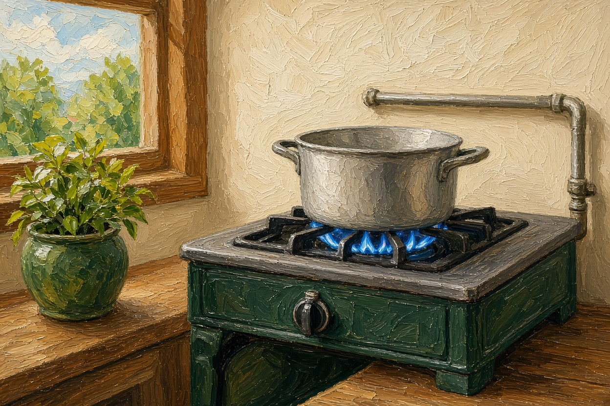

Cooking gas Where cooking gas comes from גז בישול מאין בא גז הבישול
By the end of this page, say where cooking gas comes from and why it burns clean. By the end of this page, explain where cooking gas comes from and why it is a clean fuel. בסוף העמוד תוכלו לומר מאין בא גז הבישול ולמה הוא נשרף נקי. בסוף העמוד תוכלו להסביר מאין בא גז הבישול ומדוע הוא דלק נקי.
Cooking gas is an important fuel. We know it from cooking and from heating. Some of it is found in nature, trapped under the ground, in many places in the world. It can push out through cracks in the rock, and sometimes it catches fire. People call those places burning springs. Long ago they frightened people, who thought evil gods and demons lived there. Cooking gas is an important fuel in our time, and we know it from cooking and from heating. In nature it lies trapped in the earth, in different places around the world. Natural gas can burst out through cracks in the rocks, and sometimes it catches fire. Those places are called burning springs. They frightened people long ago, who believed they were evil gods and demons. גז בישול הוא דלק חשוב. מכירים אותו מבישול ומחימום. חלק ממנו נמצא בטבע, כלוא באדמה, במקומות שונים בעולם. הוא יכול לפרוץ מסדקים בסלע, ולפעמים הוא נדלק. למקומות האלה קוראים מעיינות בוערים. פעם הם הפחידו אנשים, שחשבו שגרים שם אלים רעים ושדים. גז הבישול הוא דלק חשוב בימינו, ומכירים אותו מן הבישול ומן החימום. בטבע הוא כלוא באדמה, במקומות שונים בעולם. גז טבעי יכול לפרוץ מסדקים בסלעים, ולעיתים הוא מתלקח. למקומות האלה קוראים מעיינות בוערים. הם הפחידו מאוד את האנשים בימים קדומים, שחשבו שאלה אלים רעים ושדים.
For many years people hardly used this natural gas. They began to use it, mainly for light, only after they learned to keep it in containers and send it through pipes. In Israel, natural gas is found near the city of Arad, in the Negev. For a long time people did not see how important natural gas was, and they barely used it. They began to use it, mainly for lighting, only after they found a way to put it into containers or into pipes. In Israel, natural gas is found near the city of Arad in the Negev. שנים רבות כמעט לא השתמשו בגז הטבעי. התחילו להשתמש בו, בעיקר לאור, רק אחרי שלמדו לשמור אותו בכלים ולהעביר אותו בצינורות. בישראל יש גז טבעי ליד העיר ערד שבנגב. שנים רבות לא הבינו כמה הגז הטבעי חשוב, וכמעט לא השתמשו בו. התחילו להשתמש בו, בעיקר לתאורה, רק אחרי שמצאו דרך להכניס אותו לכלים או לצינורות. בישראל מצוי גז טבעי ליד העיר ערד בנגב.
There is also cooking gas that people make. About two hundred years ago, William Murdoch, an engineer from Scotland, found that gas for burning can be made from coal. Today it is made from coal and from oil. It behaves much like natural gas. Beside the gas from nature, there is cooking gas that does not come from the ground as it is. About two hundred years ago William Murdoch, an engineer from Scotland, discovered that burning gas can be produced from coal. Today it is produced from coal and also from oil, and its properties are much like those of natural gas. יש גם גז בישול שבני אדם מכינים. לפני כמאתיים שנה מצא ויליאם מרדוק, מהנדס מסקוטלנד, שאפשר להכין גז מפחם. היום מכינים אותו מפחם וגם מנפט. הוא דומה לגז הטבעי. לצד הגז מן הטבע יש גם גז בישול שאינו נמצא באדמה כמו שהוא. לפני כמאתיים שנה גילה ויליאם מרדוק, מהנדס מסקוטלנד, שאפשר להפיק גז מפחם. היום מפיקים אותו מפחם וגם מנפט, ותכונותיו דומות לתכונות הגז הטבעי.
Today most light comes from electricity, not from gas. We use gas mainly for cooking and for heat. It gives a lot of heat, and it is a clean fuel. It burns with no smoke and no soot, and it leaves no ash. Cars are not built to run on cooking gas, so it is not used for travel. Today most lighting runs on electricity rather than on gas. Gas serves us mainly for cooking and for heating. Cooking gas gives a great deal of heat as it burns, and it is a clean fuel: no smoke, no soot, and no ash left behind. It is not used for transport, because cars today are not built to run on gas. היום רוב האור בא מחשמל, לא מגז. משתמשים בגז בעיקר לבישול ולחימום. הוא נותן הרבה חום, והוא דלק נקי. הוא נשרף בלי עשן ובלי פיח, ולא משאיר אפר. מכוניות לא בנויות לנסוע על גז בישול, ולכן לא משתמשים בו לנסיעה. היום רוב התאורה פועלת בחשמל ולא בגז. הגז משמש אותנו בעיקר לבישול ולחימום. גז הבישול נותן חום רב בשעת הבערה, והוא דלק נקי: הוא נשרף בלי עשן ובלי פיח, ואינו מותיר אפר. אין משתמשים בו לתחבורה, כי המכוניות של היום אינן בנויות לנסיעה בגז.
